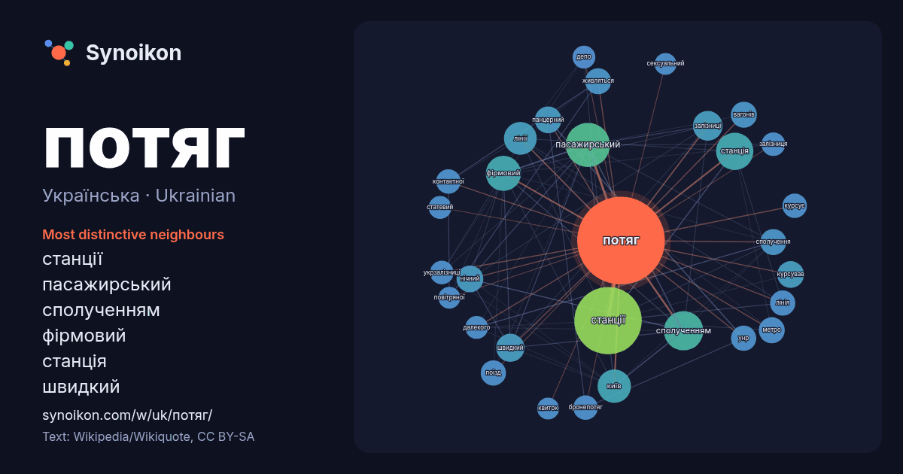

Українська · Ukrainian · word of the day list
потяг
“train” · The words found around it in 1041 instances from Ukrainian Wikipedia, Wikiquote.

Most distinctive neighbours
- станції 53×
- пасажирський 45×
- сполученням 38×
- фірмовий 32×
- станція 20×
- швидкий 20×
- панцерний 19×
- курсував 19×
- нічний 18×
- вагонів 16×
- бронепотяг 16×
- контактної 16×
- курсує 16×
- поїзд 15×
- живляться 15×
- метро 15×
- укрзалізниці 15×
- залізниці 15×
- київ 14×
- лінії 14×
× = how many times more often than in general Ukrainian Wikipedia text.
Most frequent neighbours
- станції 114
- пасажирський 49
- року 47
- сполученням 39
- станція 35
- через 32
- фірмовий 31
- київ 28
- лінії 27
- або 24
- залізниці 22
- руху 22
- перший 20
- час 20
- швидкий 20
- збройних 18
- курсував 18
- нічний 18
- панцерний 18
- вагонів 17
In context
- Потяг — термін, який має кілька значень. Ця сторінка значень містить посилання на статті про кожне з них. Якщо ви потрапили сюди за внутрішнім посиланням Wikipedia snippets · Потяг
- Львів». suspilne.media. Розмальований потяг "До перемоги" курсує з Харкова до Ужгорода. suspilne.media. Вагони «Потяга до перемоги» вирушають за межі України Wikipedia snippets · Потяг до перемоги
- «Фатальний потяг» (англ. Fatal Attraction) — американський психологічний трилер 1987 року режисера Адріана Лайна[en]. Життя Дена Галаґера (Майкл Дуглас) Wikipedia snippets · Фатальний потяг (фільм, 1987)
- «Потяг до Юми» (англ. 3:10 to Yuma) — американський вестерн 2007 року компанії Lions Gate Entertainment, знятий режисером Джеймсом Менголдом. У головних Wikipedia snippets · Потяг до Юми (фільм)
- Потяг до Яремче — музично-мистецький дводенний фестиваль, що відбувається щорічно з 2008 року в містечку Яремчі. Фестиваль має два головні етапи. Першим Wikipedia snippets · Потяг до Яремче
- фізично привабливою. Потяг також створюється та посилюється через сексуальну напругу[en], спричинену ним же. Фізичні прояви статевого потягу людей включають Wikipedia snippets · Статевий потяг
- Дитячий потяг (італ. Il treno dei bambini) – драматичний фільм режисерки Крістіни Коменчіні, заснований на однойменному романі Віоли Ардоне. Вперше представлений Wikipedia snippets · Дитячий потяг
- Джін — у ролі Кі Чхоль, провідник потягу. Кім Чхан Хван — у ролі Кім Чін Мо. Box Office Mojo — 1999. d:Track:Q223142 «Потяг до Пусана» на екранах в Каннах Wikipedia snippets · Потяг до Пусана
More Ukrainian words
Precomputed on 2026-10-09 with default settings (±5 words, medium corpus). The interactive map can refresh it with live data.